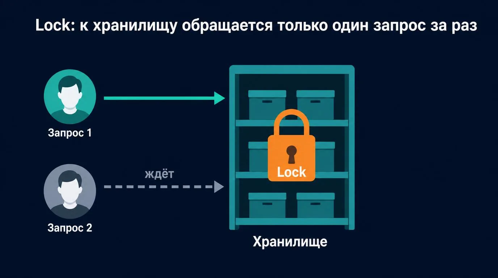
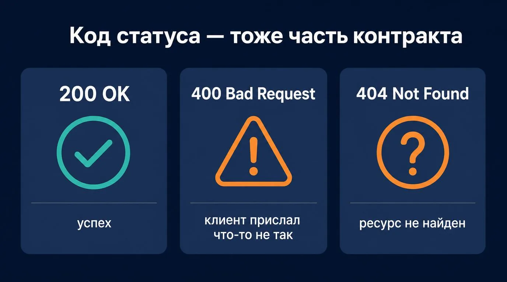
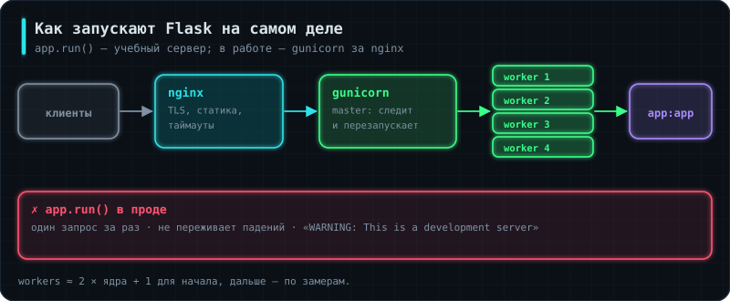
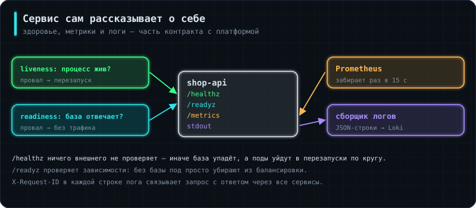

Задание 1 — API с health-check
Сделай Flask- или FastAPI-сервис с эндпоинтами /healthz (жив ли процесс) и /readyz (доступна ли база) и одним рабочим ресурсом с CRUD.
Проверка: при остановленной базе /healthz отвечает 200, а /readyz — 503.
Это первый настоящий веб-сервис в программе — то, что дальше придётся контейнеризировать (3.1 Docker), выкатывать (3.2 CI-CD) и мониторить (4.5 Наблюдаемость). Архитектура здесь та же слоистая идея, что в 2.4 Архитектура и тесты, только интерфейсный слой — не терминал, а HTTP.
Сквозной пример — API магазина на учебной базе из SQL-уроков: каталог товаров и оформление заказа с проверкой остатков на складе. Этот же сервис потом станет основой проектов в портфолио.
Аналогия: Flask — это ресепшн: он не решает сам ничего по существу, а только принимает запрос, передаёт его нужному отделу (твоему коду) и возвращает готовый ответ.
from flask import Flask, jsonify
app = Flask(__name__)
@app.route("/products/<int:product_id>", methods=["GET"])
def get_product(product_id):
product = catalog.get(product_id)
if product is None:
return jsonify(error="product_not_found"), 404
return jsonify(id=product.id, title=product.title, price=str(product.price))
app.run(port=5000)
Строка @app.route("/products/<int:product_id>", methods=["GET"]) над функцией — это декоратор: конструкция с символом @ перед именем, которая «оборачивает» следующую за ней функцию дополнительным поведением, не меняя её код внутри. Здесь декоратор регистрирует функцию get_product как обработчик для конкретного пути и метода — то есть говорит Flask: «когда придёт GET-запрос на такой-то адрес, вызови именно эту функцию». <int:product_id> в пути — часть, которая может быть любым целым числом и автоматически передаётся в функцию как аргумент с тем же именем. Запрос /products/abc Flask сам отклонит с кодом 404, до твоего кода дело не дойдёт. Один @app.route — один «отдел ресепшна»: конкретный путь + метод (POST/GET) ведут к конкретной функции.
Цену отдаём строкой str(product.price): деньги хранятся в Decimal (2.9 Агрегация, §15), а JSON знает только числа с плавающей точкой — передать цену как float значит рискнуть копейками.
Аналогия: та же идея, что в 2.4 Архитектура и тесты, §1, только слой интерфейса — не таблица в терминале, а JSON по HTTP.
Если завтра понадобится хранить данные не в памяти, а в базе данных — при слоистой архитектуре меняется только datasource-слой. Domain и web не заметят разницы, потому что работают через интерфейс, а не напрямую с конкретной реализацией.
Аналогия: маппер — переводчик между двумя людьми, говорящими на разных языках, но об одном и том же: модель для веба и модель для домена описывают один и тот же товар, но в разном виде.
@dataclass
class Product: # домен: всё, что нужно правилам магазина
id: int
store_id: int
title: str
price: Decimal
stock: int
purchase_price: Decimal # закупочная цена — клиенту её показывать нельзя
def to_web(p: Product) -> dict:
return {"id": p.id, "title": p.title, "price": str(p.price), "in_stock": p.stock > 0}
Кажется избыточным, пока поля совпадают, но модели неизбежно расходятся. Веб-модель прячет внутреннее (закупочную цену, точный остаток — конкурентам незачем знать, сколько у тебя видеокарт), упрощает (вместо числа — флаг «в наличии») и сохраняет совместимость: домен можно переделать как угодно, а клиенты продолжат получать тот же JSON.
Аналогия: если несколько посетителей одновременно тянутся к последнему товару на полке, нужен порядок — иначе его «купят» двое.
Это та же гонка, что разбиралась на уровне базы в 2.10 Транзакции, §4, только внутри процесса Python:
from threading import Lock
class InMemoryStock:
def __init__(self, stock: dict[int, int]):
self._stock = dict(stock)
self._lock = Lock()
def reserve(self, product_id: int, qty: int) -> bool:
with self._lock:
available = self._stock.get(product_id, 0)
if available < qty:
return False
self._stock[product_id] = available - qty
return True
Lock гарантирует, что проверку остатка и списание выполняет только один запрос за раз — иначе два одновременных запроса оба увидят «осталось 1» и оба спишут (race condition, см. словарик 2.3 Параллельность). Конструкция with self._lock: ... — это менеджер контекста: она автоматически «захватывает» блокировку перед выполнением кода внутри отступа и гарантированно «отпускает» её обратно после — даже если внутри блока произойдёт ошибка. Без with пришлось бы вручную писать lock.acquire() в начале и не забывать lock.release() в конце (в том числе на всех путях выхода из функции, включая случаи с исключениями) — with берёт эту аккуратность на себя.

Аналогия: вместо того чтобы кофемашина сама выращивала себе кофейные зёрна, их ей просто привозят — так её проще заменить или протестировать без реального завода зёрен.
class Container:
def __init__(self, settings):
self.stock = InMemoryStock(settings.initial_stock) # singleton — один на всё приложение
self.catalog = ProductRepository(settings.db_url)
self.orders = OrderService(self.catalog, self.stock)
Класс OrderService не создаёт себе хранилище и каталог сам — он получает их готовыми снаружи. Это позволяет в тестах подставить «поддельный» каталог из трёх товаров вместо настоящей базы, а в продакшене заменить InMemoryStock на хранилище в PostgreSQL, не трогая ни строчки в OrderService.
Аналогия: кассир не решает сам, можно ли продать товар со скидкой и что делать, если товара не хватает, — это правила магазина. Его дело — правильно их применить.
class OutOfStock(Exception):
def __init__(self, product_id):
super().__init__(f"товара {product_id} нет в нужном количестве")
self.product_id = product_id
class OrderService:
def __init__(self, catalog, stock):
self.catalog = catalog
self.stock = stock
def place_order(self, customer_id: int, items: list[tuple[int, int]]) -> Order:
lines = []
for product_id, qty in sorted(items): # единый порядок — без взаимных блокировок
product = self.catalog.get(product_id)
if product is None:
raise ProductNotFound(product_id)
if not self.stock.reserve(product_id, qty):
raise OutOfStock(product_id)
lines.append(OrderLine(product, qty))
return Order(customer_id=customer_id, lines=lines)
Домен говорит на языке магазина: «товар не найден», «нет в нужном количестве». Он не знает про HTTP-коды — превращать OutOfStock в ответ 409 будет веб-слой (§7). sorted(items) — то же правило единого порядка захвата ресурсов, что спасало от deadlock в 2.10 Транзакции, §10.
В этом упрощённом примере уже зарезервированные товары не возвращаются, если на третьем товаре не хватило остатка. В настоящем сервисе весь заказ оформляют одной транзакцией базы: либо всё, либо ничего (атомарность из 2.10 Транзакции, §2).
Аналогия: контракт API — как меню в кафе: клиент не обязан знать, как готовится блюдо внутри кухни, но обязан точно знать, что написать в заказе и что получит на тарелке.
Запрос на оформление заказа (POST /orders):
{
"customer_id": 1,
"items": [{"product_id": 3, "qty": 1}, {"product_id": 12, "qty": 2}]
}
Успешный ответ (201 Created):
{
"order_id": 1042,
"total": "57570.00",
"status": "created"
}
Ответ с ошибкой (409 Conflict) — товара не хватает:
{
"error": "out_of_stock",
"message": "Товара 3 нет в нужном количестве"
}
Некорректный запрос (400 Bad Request):
{
"error": "invalid_request",
"message": "Нужен непустой список items с product_id и qty > 0"
}
Код статуса — тоже часть контракта, не только тело ответа: 201 — «создано», 400 — «клиент прислал что-то некорректное», 404 — «такого ресурса нет», 409 — «запрос корректный, но противоречит текущему состоянию». Клиент (браузер, другой сервис, тестовый скрипт) должен уметь отличить эти случаи, даже не читая тело ответа.

@app.route("/orders", methods=["POST"])
def create_order():
body = request.get_json(silent=True) or {}
items = body.get("items")
if not items or any(i.get("qty", 0) <= 0 for i in items):
return jsonify(error="invalid_request",
message="Нужен непустой список items с product_id и qty > 0"), 400
try:
order = container.orders.place_order(
body["customer_id"], [(i["product_id"], i["qty"]) for i in items])
except ProductNotFound as e:
return jsonify(error="product_not_found", message=str(e)), 404
except OutOfStock as e:
return jsonify(error="out_of_stock", message=str(e)), 409
return jsonify(order_id=order.id, total=str(order.total), status="created"), 201
Важная деталь: валидация формы запроса происходит до обращения к домену — веб-слой отсекает заведомо некорректные запросы, и домен вообще не узнаёт о существовании плохих данных. А исключения домена веб-слой переводит в HTTP-коды. Это ровно тот же принцип, что и в §8 урока 2.2 Python для автоматизации («проверяй конкретные ошибки и сообщай о них понятно»), только теперь на уровне HTTP-статусов, а не stderr.
Пользователь нажал «Оформить», ответ задержался, он нажал ещё раз — и получил два заказа. Защита — ключ идемпотентности: клиент генерирует уникальный идентификатор операции и шлёт его в заголовке Idempotency-Key, а сервер, увидев уже обработанный ключ, возвращает прежний ответ вместо создания нового заказа. Об этом спрашивают на собеседованиях про API и про повторы запросов (2.3 Параллельность, §11).
Аналогия: тестовый клиент Flask — как тренажёр для пилотов: имитирует настоящий запрос к серверу, но без реальной сети, портов и запущенного процесса.
import pytest
from app import create_app
@pytest.fixture
def client():
app = create_app(initial_stock={3: 1}) # на складе одна видеокарта
app.config["TESTING"] = True
with app.test_client() as client:
yield client
def test_second_order_for_last_item_returns_409(client):
order = {"customer_id": 1, "items": [{"product_id": 3, "qty": 1}]}
assert client.post("/orders", json=order).status_code == 201
response = client.post("/orders", json=order)
assert response.status_code == 409
assert response.get_json()["error"] == "out_of_stock"
@pytest.fixture — ещё один декоратор, но теперь из библиотеки для тестирования pytest: он помечает функцию client как «подготовку», которую можно переиспользовать в разных тестах — достаточно указать имя client аргументом самой тестовой функции, и pytest сам подставит туда результат. Слово yield внутри client() работает как временная «пауза»: код до yield выполняется как подготовка (создание тестового клиента), само значение отдаётся тесту, а после того как тест закончится, выполнение вернётся в эту же функцию и продолжится с кода после yield — удобно для автоматической уборки ресурсов после теста.
create_app(...) — фабрика приложения: функция, которая собирает приложение с нужными настройками. Благодаря DI из §5 тест сам задаёт остатки на складе и не зависит от базы. Такой тест проверяет ровно контракт из §7 (код статуса + тело ответа), не поднимая реальный сервер на порту и не делая настоящих сетевых запросов — быстро и надёжно запускается в CI/CD (3.2 CI-CD).
Аналогия: хардкодить порт или адрес базы данных прямо в коде — как приклеить адрес доставки скотчем на коробку с товаром: работает, пока не нужно отправить точно такую же коробку по другому адресу.
import os
PORT = int(os.environ.get("APP_PORT", 5000))
DEBUG = os.environ.get("APP_DEBUG", "false").lower() == "true"
app.run(port=PORT, debug=DEBUG)
Значение по умолчанию (5000, "false") позволяет коду работать локально без единой настройки, а переменные окружения — переопределить это же поведение в контейнере или на сервере, не трогая код. Это ровно тот механизм, которым Docker (3.1) и CI/CD-пайплайны (3.2) обычно передают приложению настройки конкретного окружения (dev/staging/prod).
Переменные окружения годятся для настроек, но пароли через них передавать неидеально: они видны в docker inspect, в /proc/<pid>/environ, попадают в дампы при падении и в логи CI, если кто-то напечатает окружение при отладке. Для секретов есть отдельные механизмы — Docker secrets, Kubernetes Secrets, Vault (6.2 DevSecOps). На этом этапе достаточно запомнить правило: .env никогда не коммитится (0.1 Git, §5), а в репозитории лежит .env.example с именами переменных и пустыми значениями.

app.run() — учебный автомобиль на автодроме. Ездит, но выезжать на нём в город не стоит.
При запуске Flask печатает предупреждение, которое почти все пропускают: WARNING: This is a development server. Do not use it in a production deployment. Это не формальность. Отладочный сервер обрабатывает один запрос за раз, не переживает падений и не умеет ничего из того, что нужно под нагрузкой.
В работе запускают через WSGI-сервер — чаще всего gunicorn:
pip install gunicorn
gunicorn --workers 4 --bind 0.0.0.0:8000 --timeout 30 app:app
--workers — сколько процессов обрабатывают запросы параллельно. Мастер-процесс следит за ними и поднимает упавшие. Ориентир для начала — 2 × число ядер + 1, дальше подбирается замерами. app:app означает «в модуле app взять объект app».
Обрати внимание, что это ровно та же история, что в 2.3 Параллельность: воркеры — отдельные процессы, потому что у каждого свой GIL. Отсюда же следствие, о которое спотыкаются: глобальные переменные не разделяются между воркерами. Хранилище остатков из §4, живущее в памяти процесса, при четырёх воркерах превратится в четыре независимых хранилища, и запрос попадёт то в одно, то в другое. Общее состояние выносят наружу — в Redis или базу.
Полная цепочка на боевом сервере: клиент → nginx (TLS, статика, таймауты — 1.2 Сети, §11) → gunicorn (воркеры) → твой код. Сам Flask ничего про эту обвязку не знает, и в этом смысл.
Flask остаётся отличным учебным и рабочим инструментом, но в вакансиях 2026 года заметно чаще встречается FastAPI: он асинхронный (полезно там, где сервис в основном ждёт — см. 2.3 Параллельность), валидирует запросы через pydantic вместо ручных проверок из §7 и сам генерирует документацию API. Запускается он не через gunicorn напрямую, а через ASGI-сервер uvicorn. Идеи слоёв, контракта и конфигурации при этом ровно те же — переучиваться придётся только на синтаксис.

Два разных эндпоинта проверки:
@app.get("/healthz")
def healthz():
"""Процесс жив. Ничего не проверяем — иначе перезапуски пойдут по кругу."""
return {"status": "ok"}, 200
@app.get("/readyz")
def readyz():
"""Готов ли принимать трафик: проверяем зависимости."""
try:
db.execute("SELECT 1")
except Exception as e:
app.logger.warning("readiness failed: %s", e)
return {"status": "not ready", "reason": "database"}, 503
return {"status": "ready"}, 200
Разница между ними — типовой вопрос на собеседовании. Отвалилась база: /healthz обязан отвечать 200, потому что процесс жив и перезапуск ничему не поможет; /readyz обязан вернуть 503, потому что слать сюда трафик сейчас бессмысленно. Если перепутать и проверять базу в /healthz, оркестратор начнёт бесконечно перезапускать здоровое приложение из-за проблемы на стороне базы. Подробнее про пробы — в 5.1 Kubernetes.
Метрики для Prometheus — прямое продолжение 1.4 Метрики и логи:
from prometheus_flask_exporter import PrometheusMetrics
metrics = PrometheusMetrics(app) # добавляет /metrics автоматически
Библиотека сама начнёт считать число запросов (counter) и время ответа (histogram) с разбивкой по эндпоинту и коду ответа. Отсюда же берутся перцентили и golden signals, о которых шла речь в уроке 1.4. Важно помнить про кардинальность: разбивка по пути годится, пока путей десятки; класть в метку идентификатор игры из /game/<uuid> — верный способ положить Prometheus.
Логи — в stdout, а не в файл. В контейнере файл никто не читает; сбором занимается среда — journald, Docker, Loki. Формат — JSON, чтобы логи можно было фильтровать по полям, а не регулярками:
import logging, json, sys, uuid
from flask import g, request
class JsonFormatter(logging.Formatter):
def format(self, record):
return json.dumps({
"ts": self.formatTime(record),
"level": record.levelname,
"msg": record.getMessage(),
"request_id": getattr(g, "request_id", None),
}, ensure_ascii=False)
@app.before_request
def add_request_id():
g.request_id = request.headers.get("X-Request-ID", str(uuid.uuid4()))
Идентификатор запроса (request_id) — то, что превращает разрозненные строки в историю. Он приходит с запросом или генерируется, пробрасывается во все логи обработки и передаётся дальше при обращении к другим сервисам. Когда пользователь жалуется, по одному идентификатору поднимается вся цепочка через все сервисы. Без этого в логах на сотню запросов в секунду разобраться невозможно.
Аналогия: когда смену закрывают, кассир не бросает покупателя посреди оплаты — он дообслуживает текущего и не пускает новых.
При обновлении или остановке контейнера процесс получает SIGTERM (1.1 Linux, §5), а через некоторое время — SIGKILL. Если приложение не обрабатывает первый сигнал, все запросы в работе оборвутся ошибкой у пользователей.
Graceful shutdown означает: перестать принимать новые запросы, дообработать текущие, закрыть соединения с базой, выйти. gunicorn умеет это сам, но у него есть таймаут (--graceful-timeout), и код не должен держать долгие операции дольше него.
import signal
def handle_sigterm(signum, frame):
app.logger.info("SIGTERM received, shutting down gracefully")
storage.flush()
sys.exit(0)
signal.signal(signal.SIGTERM, handle_sigterm)
Отдельная деталь для контейнеров: сигнал получает процесс с PID 1. Если приложение запущено через шелл-обёртку, сигнал придёт шеллу, а не приложению — отсюда правило про exec в скриптах запуска, к которому вернёмся в 3.1 Docker.
12-factor app — свод принципов для сервисов, которые предстоит контейнеризировать. Из двенадцати практически важны шесть, и большинство уже встретились:
| Принцип | Что означает | Где было |
|---|---|---|
| Конфигурация в окружении | никаких настроек в коде | §9 |
| Логи в stdout | приложение не управляет хранением логов | §11 |
| Портируемость | сервис сам слушает порт, не полагаясь на веб-сервер снаружи | §10 |
| Отсутствие состояния | процесс ничего не хранит в себе, состояние — во внешнем хранилище | §10, про воркеры |
| Явные зависимости | всё перечислено в requirements.txt |
2.1 Python, §17 |
| Одноразовость процессов | быстрый старт, корректное завершение по SIGTERM | этот раздел |
Именно соблюдение этих правил делает приложение пригодным для Docker и Kubernetes. Нарушение любого из них всплывёт в следующих уроках в виде конкретной поломки, а не абстрактной претензии к архитектуре.
Lock защищает общие данные от одновременного повреждения несколькими запросами.app.run() — отладочный сервер. В работе запускают через gunicorn с несколькими воркерами за nginx./healthz отвечает всегда (жив ли процесс), /readyz проверяет зависимости (готов ли к трафику). Перепутать — получить цикл перезапусков./metrics для Prometheus; в метки не кладут идентификаторы — кардинальность.request_id — иначе цепочку одного запроса не восстановить.SIGTERM надо обрабатывать: дообслужить текущие запросы и выйти, иначе при каждом деплое пользователи получают ошибки.Задания делаются на своей машине или в облаке. Отметь задание, когда выполнила проверку из его описания, — за каждое начисляется опыт.
Сделай Flask- или FastAPI-сервис с эндпоинтами /healthz (жив ли процесс) и /readyz (доступна ли база) и одним рабочим ресурсом с CRUD.
Проверка: при остановленной базе /healthz отвечает 200, а /readyz — 503.
Все настройки (порт, строка подключения к базе, уровень логов) — из переменных окружения с проверкой при старте. Нет обязательной переменной — сервис не стартует и пишет, какой.
Проверка: env -i python app.py падает с понятным сообщением; в коде нет ни одного пароля.
Напиши тесты через тестовый клиент: успешный ответ, ошибка валидации (400/422), несуществующий ресурс (404).
Проверка: тесты не поднимают реальный сервер и проходят в CI.
Запусти сервис через gunicorn (или uvicorn) с несколькими воркерами за nginx, логи — JSON в stdout.
Проверка: kill -TERM главного процесса завершает работу без обрыва идущих запросов (проверь медленным эндпоинтом с sleep).
Упакуй сервис в Docker-образ по правилам из 3.1 Docker и 6.2 DevSecOps: slim-база, не root, HEALTHCHECK.
Проверка: docker inspect показывает healthy, docker stop завершает контейнер быстрее 10 секунд (SIGTERM обработан).